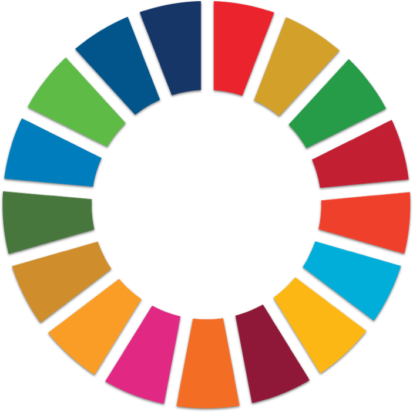
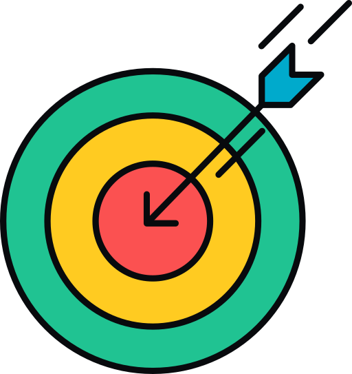
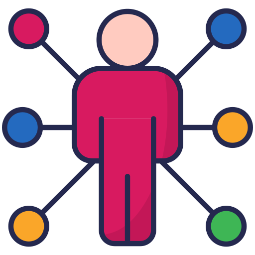

Vivimos inmersos en un entorno tecnológico que facilita nuestras vidas, pero también tiene un impacto considerable en el medio ambiente. Dispositivos como teléfonos móviles, ordenadores, electrodomésticos e incluso tecnologías renovables como las placas solares, contienen materiales contaminantes y contribuyen a la acumulación de residuos electrónicos a nivel global.
Este recurso didáctico tiene como objetivo principal proporcionar a los estudiantes una comprensión profunda de los efectos tanto positivos como negativos que la tecnología ejerce sobre nuestro planeta. Se pretende que reflexionen sobre el ciclo de vida de los dispositivos tecnológicos y la importancia de su gestión sostenible, abordando así los desafíos ambientales que enfrenta nuestra sociedad.
La situación de aprendizaje propuesta es vital para el futuro de nuestros estudiantes, pues les permite reconocer que son responsables de las decisiones tecnológicas que toman y de las consecuencias que estas tienen sobre el medio ambiente. A través de esta reflexión, se fomenta una conciencia crítica y responsable en relación con el uso de las tecnologías.
Esta propuesta se enmarca dentro de los Objetivos de Desarrollo Sostenible (ODS) de la Agenda 2030, destacando especialmente el objetivo relacionado con la Producción y Consumo Responsable, que subraya la necesidad de adoptar hábitos tecnológicos más sostenibles y conscientes.
 Producción y consumo responsable
La propuesta está alineada, además, con los principios generales de la Educación Secundaria Obligatoria (ESO), promoviendo un aprendizaje significativo para el desarrollo integral de las competencias de los estudiantes. Y trabaja varios de sus principios pedagógicos:
*Propuestas pedagógicas para todo el alumnado atendiendo a su diversidad. Arbitrando métodos que tengan en cuenta los diferentes ritmos de aprendizaje del alumnado, favorezcan la capacidad de aprender por sí mismos y promuevan el trabajo en equipo.
*Fomentar la correcta expresión oral y escrita.
*Fomentar la integración de las competencias trabajadas, y realizar proyectos significativos y relevantes, reforzando la autoestima, la autonomía, la reflexión y la responsabilidad.
*Fomentar de manera transversal la educación para la salud, la educación para la sostenibilidad y el consumo responsable, el respeto mutuo y la cooperación entre iguales.
Adicionalmente, la propuesta pretende contribuir al cumplimiento de los objetivos de la Educación Secundaria Obligatoria. Por una parte, como ya hemos mencionado, promoviendo un aprendizaje significativo y relevante para los alumnos. Pero además, trabajando para:
 Desarrollar destrezas básicas en la utilización de las fuentes de información para, con sentido crítico, adquirir nuevos conocimientos. Desarrollar las competencias tecnológicas básicas y avanzar en una reflexión ética sobre su funcionamiento y utilización.
Concebir el conocimiento científico como un saber integrado, que se estructura en distintas disciplinas, así como conocer y aplicar los métodos para identificar los problemas en los diversos campos del conocimiento y de la experiencia.
Desarrollar el espíritu emprendedor y la confianza en sí mismo, la participación, el sentido crítico, la iniciativa personal y la capacidad para aprender a aprender, planificar, tomar decisiones y asumir responsabilidades.
Y comprender y expresar con corrección, oralmente y por escrito, en la lengua castellana, textos y mensajes complejos, e iniciarse en el conocimiento, la lectura y el estudio de la Literatura
Todo ello, sin olvidar nuestra diversidad en el aula, siempre enriquecedora. Atendiéndola con adaptaciones a los diferentes ritmos de aprendizaje de los estudiantes, promoviendo el trabajo en equipo y el desarrollo de habilidades personales y sociales, lo que permite a cada estudiante avanzar de manera progresiva.

Icon by Talha Dogar